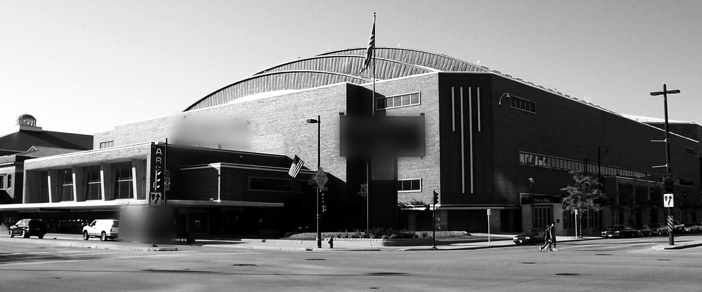
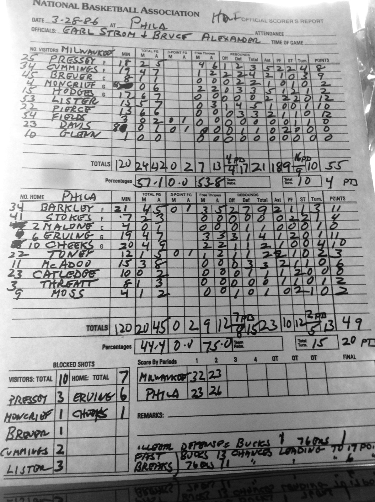
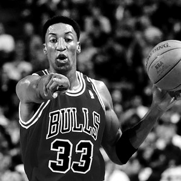
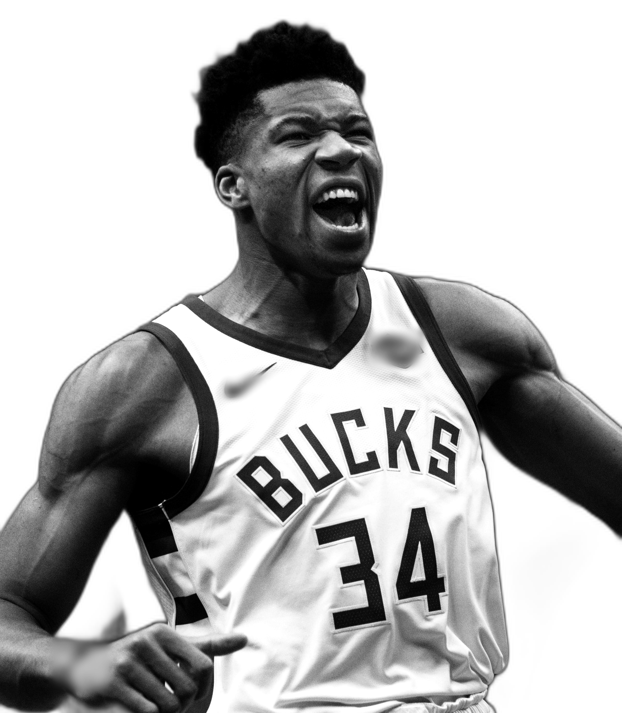

ENTRENADORD. NELSON

EL PABELLÓN · MILWAUKEE, 2005
Fotos: BrokenSphere (2009) · Sulfur (2005) · CC BY-SA 3.0
ALEROP. PRESSEY
Foto: Larodman1 (2016) · CC BY-SA 4.0

HOJA DE ANOTACIÓN REAL · 1986
ASISTENCIAS POR PARTIDO
3,1
1983-84
Hoja: NBA · dominio público

SCOTTIE PIPPEN · 1995

2018G. ANTETOKOUNMPO
Fotos: Steve Lipofsky · CC BY-SA 3.0 · Keith Allison · CC BY-SA 2.0